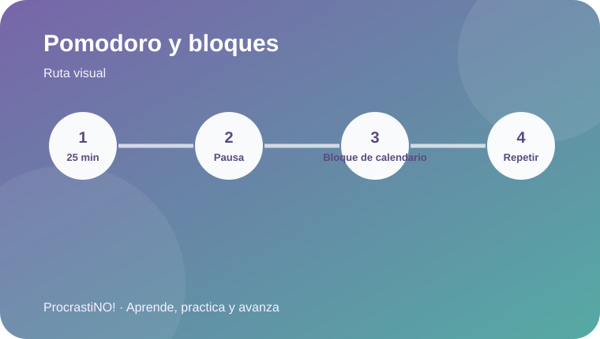
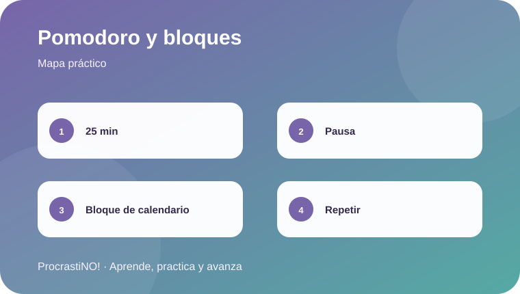

Módulo 2 · 2
Pomodoro y time-blocking
Prueba un bloque de 25 minutos como punto de partida educativo y una pausa planificada.


Trabajar por bloques
Pomodoro propone un periodo de trabajo concentrado seguido de una pausa. Aquí usamos 25 minutos como punto de partida, no como regla universal.
Idea clave:
Ejemplo: 8:00–8:25 lectura · 8:25–8:30 pausa · 8:30–8:55 resumen.
▶ Ver video de Pomodoro en YouTube
Referencias
- Come Si Studia. (2021, July 26). Pomodoro Technique for Studying [Time Management] [Video]. YouTube. https://www.youtube.com/watch?v=ngh3H4jyRbA